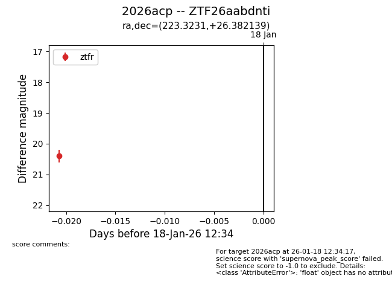
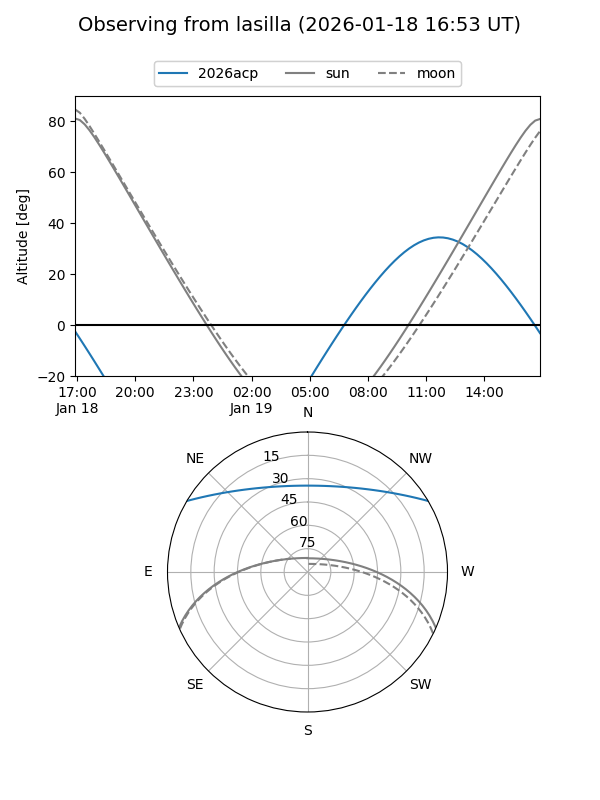
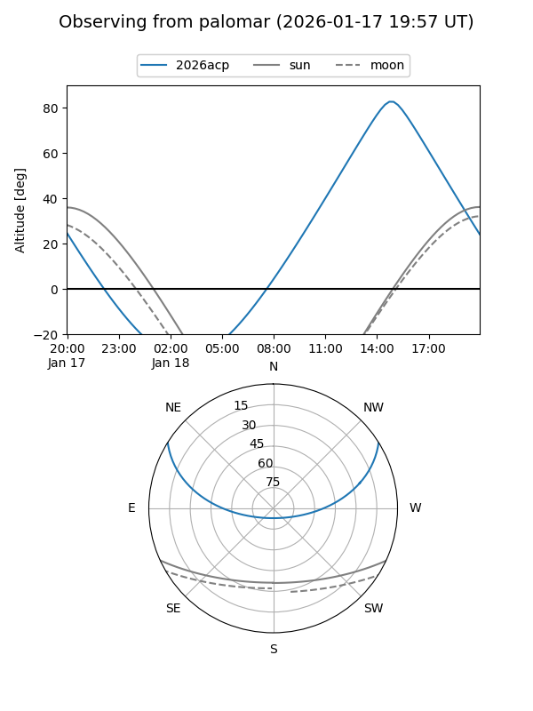

2026acp
Target 2026acp at 2026-01-18 12:35
Aliases and brokers:
FINK: link
Lasair: link
ALeRCE: link
TNS: link
YSE: link
alt names
ZTF26aabdnti (ztf,fink_ztf)
2026acp (tns,yse)
Coordinates:
equatorial (ra, dec) = 223.3231,+26.38214
equatorial (HMS+DMS) = 14:53:17.54,+26:22:55.70
galactic (l, b) = (38.3865,+62.85436)
Flags:
Photometry:
last ztfr=20.40
1 ztfr detections
Lightcurve

Visibility


Additional plots